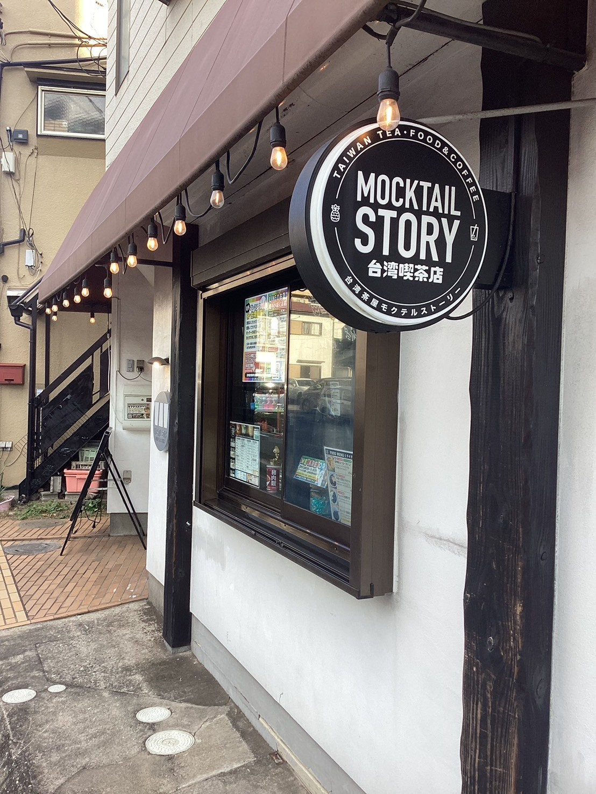
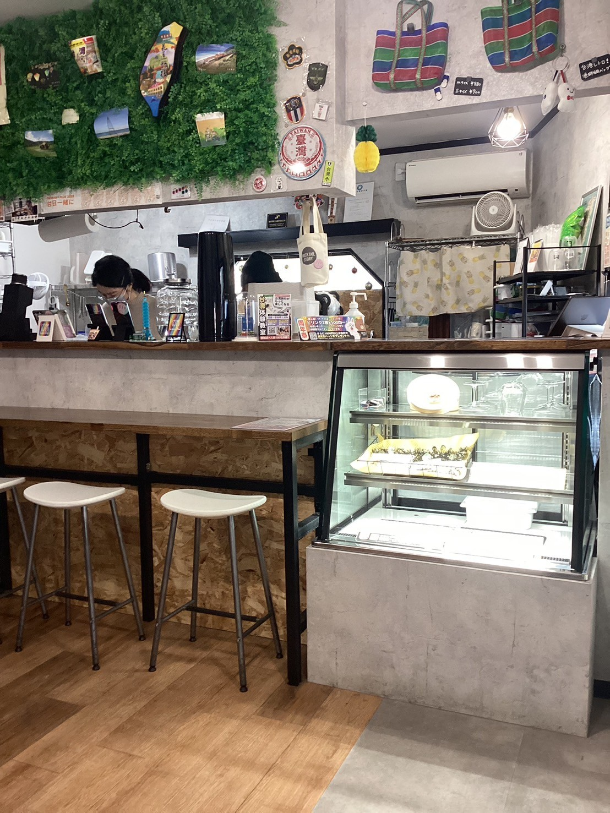

店舗紹介
津田沼周辺でも2000年に開店した老舗で有名なラーメン店「必勝軒」
常連さんも多くてお店前に行列ができていて待つことでも有名です。
基本情報
- 住所:千葉県習志野市津田沼2-5-9
- 営業時間:
- 月
- 19:00 - 19:15
- 19:45 - 20:20
- 火・木・土・祝日
- 11:30 - 13:50
- 水・金
- 11:30 - 13:50
- 19:00 - 19:15
- 19:45 - 20:20
- 定休日:日曜日
店舗の写真
外装
内装
メニュー

アクセス
JR総武線「津田沼」駅(南口)から徒歩5分
南口を出て左側のマロニエ通りを直進、千葉工大を超えたらすぐ
津田沼駅から443m